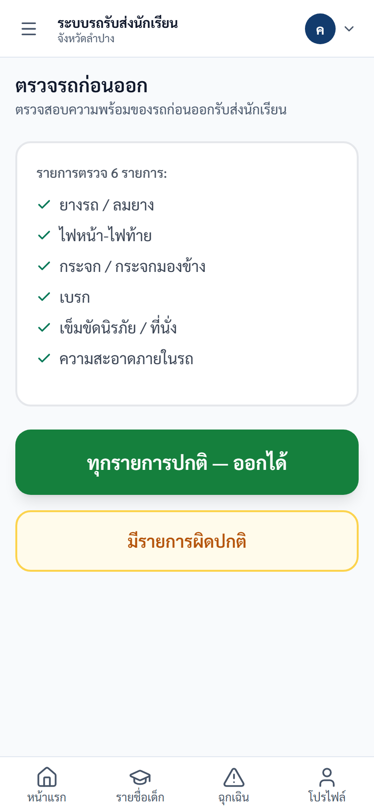
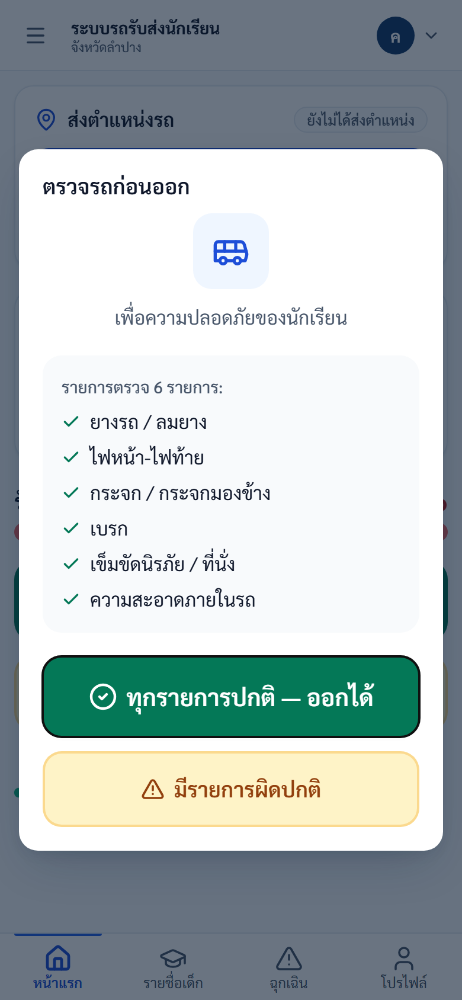
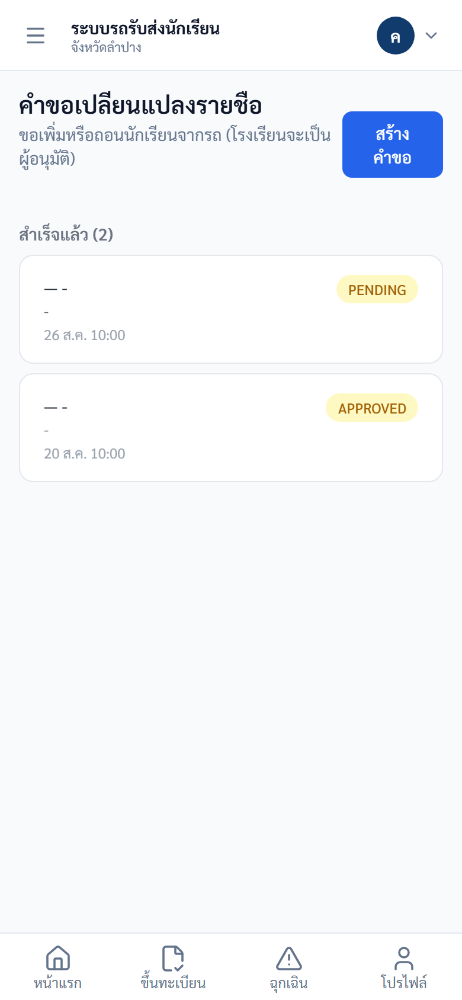
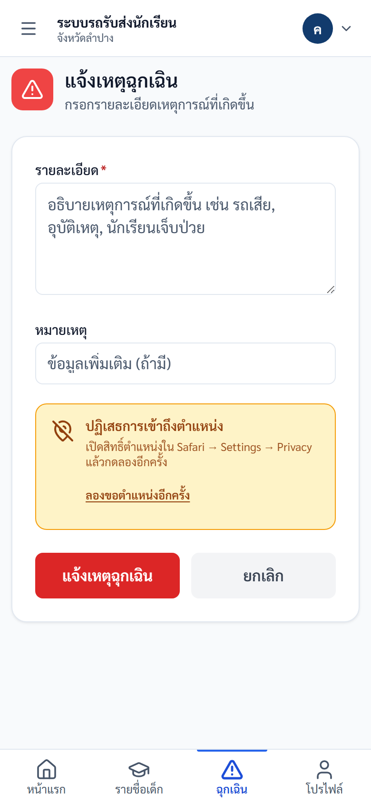
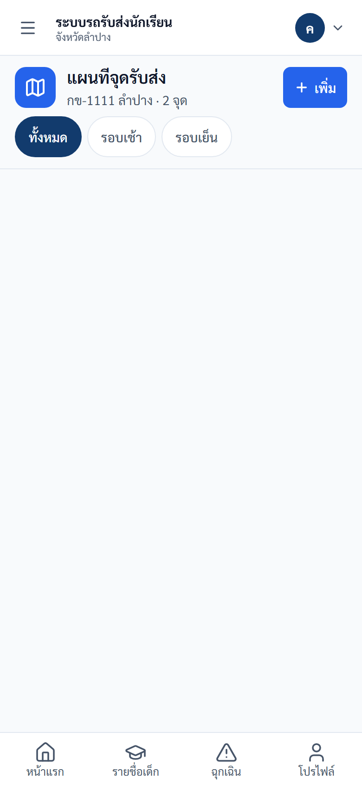
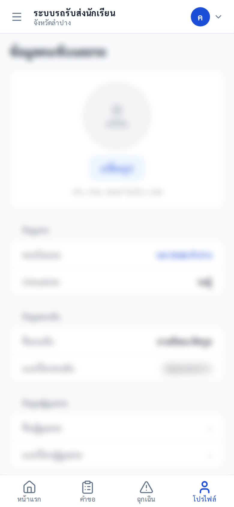
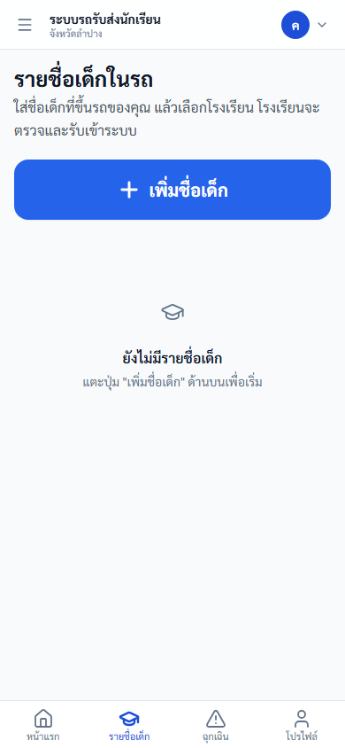
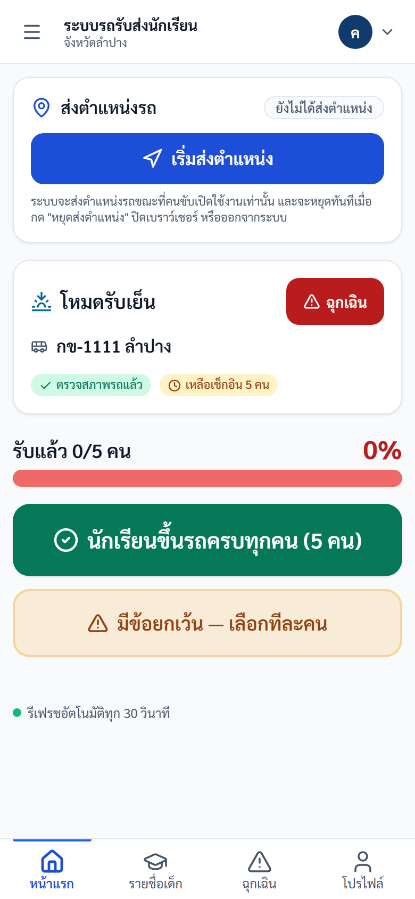

คู่มือปฏิบัติงาน — คนขับรถ
ระบบรถรับส่งนักเรียนจังหวัดลำปาง — https://schoolbuslampang.com เวอร์ชัน Phase 10.13C • อัปเดต 2026-06-24
📷 หมายเหตุภาพหน้าจอ: ข้อมูลส่วนบุคคล (ชื่อ/เบอร์) ในภาพถูกเบลอเพื่อความเป็นส่วนตัว — เมื่อใช้งานจริงจะแสดงข้อมูลตามปกติ
ภาพรวม 30 วินาที
- บทบาทนี้ทำอะไรได้:
- ตรวจรถก่อนออก (pre-trip) — บังคับก่อนเช็กชื่อ
- ดูรายชื่อนักเรียนในรถของตัวเองประจำวัน
- บันทึกรับ-ส่งนักเรียน (เช็กชื่อ) ทีละคนหรือทั้งคัน + บันทึกการลา
- ส่งคำขอเพิ่ม/ถอนนักเรียนให้โรงเรียนอนุมัติ
- แจ้งเหตุฉุกเฉิน + ส่งตำแหน่งรถ live + ดู/สร้างจุดรับส่ง
- แก้ไขข้อมูลคนขับ/รถ + เปลี่ยนรหัสผ่าน
- เข้าระบบด้วย: ใช้ ทะเบียนรถ เป็นชื่อผู้ใช้ (เช่น
นข 2210 ลำปาง) - อุปกรณ์ที่แนะนำ: มือถือเป็นหลัก (mobile-first, มีแถบล่าง 4 แท็บ + ปุ่มเมนู ☰ มุมซ้ายบน) — แท็บเล็ต/คอมพิวเตอร์ใช้ได้ (เห็นแถบเมนูด้านข้างค้างตลอด)
💡 แนะนำบันทึก URL ไว้ที่หน้าจอหลักของมือถือ (Add to Home Screen) เพื่อเปิดใช้งานเหมือนแอป
สารบัญงาน
| # | งาน | ใช้เมื่อ |
|---|---|---|
| 1 | เข้าสู่ระบบ | ทุกครั้งที่เริ่มใช้งาน |
| 2 | ตรวจรถก่อนออก (Pre-trip) | บังคับวันละ 1 ครั้ง ก่อนเช็กชื่อ |
| 3 | ดูหน้าแรก / ภาพรวมวันนี้ | เริ่มงานประจำวัน |
| 4 | ดูรายชื่อนักเรียน (Roster) | ตรวจรายชื่อในรถ |
| 5 | บันทึกรับ-ส่งนักเรียน (เช็กชื่อ) | ทุกรอบรับ-ส่ง |
| 6 | บันทึกการลา | นักเรียนลา |
| 7 | ส่งตำแหน่งรถ (Live) | ระหว่างเดินรถ |
| 8 | ส่งคำขอเปลี่ยนรายชื่อ | เพิ่ม/ถอนนักเรียน |
| 9 | แจ้งเหตุฉุกเฉิน | รถเสีย/อุบัติเหตุ/เจ็บป่วย |
| 10 | แผนที่จุดรับส่ง | ดู/สร้างจุดรับส่ง |
| 11 | เลือกรถและเริ่มรอบ | (ฟีเจอร์ปิดอยู่ — ครั้งคราว) |
| 12 | ข้อมูลคนขับ / โปรไฟล์ + เปลี่ยนรหัสผ่าน | แก้ข้อมูล/เปลี่ยนรหัส |
| 13 | ออกจากระบบ | เลิกใช้งาน |
| 14 | ขึ้นทะเบียนรถ | ยื่นขึ้นทะเบียนรถเพื่อส่งตรวจ |
| 15 | รายชื่อเด็กในรถ (Phase 10.14) | (ฟีเจอร์ปิดอยู่) ลงทะเบียนเด็ก + เลือกโรงเรียน |
งานที่ 1 — เข้าสู่ระบบ
ใช้เมื่อ: เริ่มใช้งานระบบ
ขั้นตอน:
- เปิดเบราว์เซอร์ไปที่ https://schoolbuslampang.com
- กรอกช่อง "ชื่อผู้ใช้ / ทะเบียนรถ" ด้วยทะเบียนรถของคุณ เช่น
นข 2210 ลำปาง(พิมพ์ไทยได้ เว้นวรรคตามทะเบียนจริง) - กรอก รหัสผ่าน (รหัสตั้งต้นคือ
1234ใช้ได้ครั้งแรกเท่านั้น) - กด เข้าสู่ระบบ

ภาพ: หน้าเข้าสู่ระบบ (เดสก์ท็อป)

ภาพ: หน้าเข้าสู่ระบบ (มือถือ)
✅ ผลลัพธ์ที่ถูกต้อง: เข้าสู่หน้าแรก/ภาพรวมวันนี้ได้ (เข้าครั้งเดียวอยู่ได้ทั้งวัน — token อายุ 24 ชั่วโมง)
⚠️ ถ้าติดปัญหา:
- "ชื่อผู้ใช้หรือรหัสผ่านไม่ถูกต้อง" → ทะเบียนรถหรือรหัสผ่านผิด
- "บัญชีนี้ถูกปิดการใช้งาน" → ติดต่อ admin
- "มีการพยายามเข้าสู่ระบบหลายครั้งจากเครือข่ายนี้" → รอประมาณ 15 นาที
- ลืมรหัสผ่าน: ระบบไม่มีปุ่ม "ลืมรหัสผ่าน" และคนขับตั้งรหัสใหม่เองไม่ได้ → ติดต่อ admin หรือเจ้าหน้าที่โรงเรียนให้รีเซ็ตให้
- "บัญชีนี้ยังไม่ได้ผูกกับรถ" → เข้าสู่ระบบสำเร็จแล้ว แต่ระบบยังไม่ทราบว่าคุณขับรถคันไหน จึงยังแสดงรายชื่อนักเรียน ตรวจสภาพรถ หรือเช็กชื่อให้ไม่ได้ ไม่ใช่รหัสผ่านผิดและไม่ใช่ระบบเสีย → แจ้งโรงเรียนที่คุณรับส่งนักเรียน พร้อมบอก ชื่อผู้ใช้ของคุณ และ ทะเบียนรถที่ขับ เมื่อเจ้าหน้าที่ผูกให้แล้ว กดปุ่ม "ตรวจสอบอีกครั้ง" หรือเข้าสู่ระบบใหม่
📌 สำหรับผู้จัดอบรม: ตรวจล่วงหน้าว่าบัญชีคนขับทุกคนที่จะเข้าอบรมผูกกับรถเรียบร้อยแล้ว มิฉะนั้นผู้เข้าอบรมจะทำตามคู่มือตั้งแต่งานที่ 2 เป็นต้นไปไม่ได้เลย
บังคับเปลี่ยนรหัสครั้งแรก
ใช้เมื่อ: บัญชีถูกตั้งให้ต้องเปลี่ยนรหัส (เพิ่งสร้าง/ถูกรีเซ็ต) — ขึ้นข้อความ "กรุณาเปลี่ยนรหัสผ่านเริ่มต้น"
ขั้นตอน:
- ระบบพาไปหน้า เปลี่ยนรหัสผ่าน อัตโนมัติ (ใช้เมนูอื่นไม่ได้จนเปลี่ยนเสร็จ)
- ตั้งรหัสใหม่ตามเงื่อนไข แล้วกรอกยืนยันให้ตรงกัน
- บันทึก แล้วเข้าสู่ระบบใหม่ถ้าระบบให้

ภาพ: หน้าเปลี่ยนรหัสผ่าน (บังคับเปลี่ยนครั้งแรก)
⚠️ เงื่อนไขรหัสผ่าน (บังคับที่เซิร์ฟเวอร์): อย่างน้อย 8 ตัวอักษร, ห้ามคาดเดาง่าย (เช่น
12345678,password, ตัวอักษรซ้ำตัวเดียวทั้งหมด), ห้ามตรงกับชื่อผู้ใช้ (ทะเบียนรถ) และ ต้องไม่ซ้ำกับรหัสผ่านเดิม — ถ้าไม่ผ่านจะขึ้น เช่น "รหัสผ่านต้องมีอย่างน้อย 8 ตัวอักษร" หรือ "รหัสผ่านนี้คาดเดาง่ายเกินไป กรุณาใช้รหัสผ่านอื่น" ⚠️ หลังเปลี่ยนรหัสผ่าน เซสชันเดิม (token เก่า) ใช้ไม่ได้ทันที — อาจต้องเข้าสู่ระบบใหม่
งานที่ 2 — ตรวจรถก่อนออก (Pre-trip)
ใช้เมื่อ: ก่อนเช็กชื่อทุกวัน — บังคับวันละ 1 ครั้ง (ถ้ายังไม่ตรวจ ปุ่มเช็กชื่อจะถูกล็อก)
ขั้นตอน:
- เปิดหน้าแรกครั้งแรกของวัน — หน้าต่าง "ตรวจรถก่อนออก" จะเด้งขึ้นมา (มี 6 รายการ: ยางรถ/ลมยาง, ไฟหน้า-ไฟท้าย, กระจก/กระจกมองข้าง, เบรก, เข็มขัดนิรภัย/ที่นั่ง, ความสะอาดภายในรถ)
- ถ้าทุกอย่างปกติ กด "ทุกรายการปกติ — ออกได้" (ปุ่มเขียว)
- ถ้ามีปัญหา กด "มีรายการผิดปกติ" (ปุ่มเหลือง) → เลือกรายการที่ผิดปกติ → กรอก "รายละเอียด (ถ้ามี)" → กด "บันทึกรายการผิดปกติ (N รายการ)"

ภาพ: แบบฟอร์มตรวจสภาพรถก่อนออก (6 รายการ)
✅ ผลลัพธ์ที่ถูกต้อง: ป้ายสถานะการตรวจรถบนหน้าแรกเปลี่ยนเป็น "ตรวจสภาพรถแล้ว" (หรือ "ตรวจสภาพรถแล้ว · มีรายการผิดปกติ") และปุ่มเช็กชื่อใช้งานได้
⚠️ ถ้าติดปัญหา:
- กดเช็กชื่อแล้วขึ้น "กรุณาตรวจรถก่อนออกก่อนเช็กชื่อ" → ทำขั้นตอนตรวจรถให้เสร็จก่อน
ℹ️ ถ้าบันทึกว่ามีรายการผิดปกติพร้อมรายละเอียด ระบบจะสร้างบันทึกเหตุฉุกเฉินให้อัตโนมัติ เพื่อแจ้งผู้เกี่ยวข้อง
งานที่ 3 — ดูหน้าแรก / ภาพรวมวันนี้
ใช้เมื่อ: เริ่มงานประจำวัน (หน้าแรกหลังเข้าสู่ระบบ รวมงานประจำวันไว้ที่เดียว)
ขั้นตอน:
- เปิดหน้าแรก — ถ้ายังไม่ตรวจรถวันนี้ ระบบจะเด้งหน้าต่างให้ตรวจรถก่อน (งานที่ 2)
- ดูข้อมูลบนจอ: การ์ดบนสุดบอกรอบปัจจุบัน ("โหมดส่งเช้า" / "โหมดรับเย็น") + ทะเบียนรถ + ปุ่ม "ฉุกเฉิน" (สีแดง มุมขวา), ป้ายสถานะตรวจรถ, ป้ายความคืบหน้า ("เหลือเช็กอิน N คน" / "เสร็จครบทุกคน"), แถบ "ส่งแล้ว/รับแล้ว X/Y คน"
- เมื่อตรวจรถผ่านแล้ว กด "นักเรียนขึ้นรถครบทุกคน (N คน)" หรือ "มีข้อยกเว้น — เลือกทีละคน"

ภาพ: เมื่อเปิดหน้าแรกครั้งแรกของวัน — ระบบบังคับ "ตรวจรถก่อนออก" (Pre-trip) ก่อน
ภาพ: หน้าเช็กชื่อนักเรียนหลังผ่าน Pre-trip — แสดงโหมด (รับเช้า/รับเย็น), ทะเบียนรถ, จำนวนที่เหลือเช็กอิน, แถบความคืบหน้า, ปุ่ม "นักเรียนขึ้นรถครบทุกคน" (เช็กทั้งคัน) และ "มีข้อยกเว้น — เลือกทีละคน" (เช็กรายคน), ปุ่มส่งตำแหน่งรถ และปุ่มฉุกเฉิน
✅ ผลลัพธ์ที่ถูกต้อง: เห็นรอบปัจจุบัน ทะเบียนรถ และความคืบหน้าการเช็กชื่อครบถ้วน
💡 หน้านี้รีเฟรชอัตโนมัติทุก 30 วินาที (มีข้อความ "รีเฟรชอัตโนมัติทุก 30 วินาที") ℹ️ ระบบเลือกรอบเช้า/เย็นให้อัตโนมัติตามเวลามาตรฐานไทย (โดยปริยายหลังเที่ยงเป็น "รับเย็น") — ไม่อิงนาฬิกาในเครื่องคุณ
เมนู / หน้าจอ (อ้างอิงด่วน)
บนมือถือ — แถบล่าง 4 แท็บ:
| แท็บ | ทำอะไร |
|---|---|
| หน้าแรก | ภาพรวมวันนี้ + ตรวจรถ + เช็กชื่อ + ส่งตำแหน่งรถ |
| คำขอ | สร้าง/ดูคำขอเพิ่ม-ถอนนักเรียน |
| ฉุกเฉิน | แจ้งเหตุฉุกเฉิน |
| โปรไฟล์ | ข้อมูลคนขับและรถ + เปลี่ยนรหัสผ่าน |
ℹ️ เมนู "เลือกรถและเริ่มรอบ" และ "แผนที่จุดรับส่ง" ไม่อยู่ในแถบล่าง 4 แท็บ — บนมือถือเข้าได้โดยกดปุ่ม ☰ มุมซ้ายบน เพื่อเปิดแถบเมนูด้านข้าง (มีครบทุกหน้า)
บนคอมพิวเตอร์ — แถบเมนูด้านข้าง (Sidebar):
| กลุ่ม | เมนู | ทำอะไร |
|---|---|---|
| ภาพรวม | ภาพรวมวันนี้ | หน้าแรก เช็กชื่อนักเรียน |
| งานประจำวัน | เลือกรถและเริ่มรอบ | เลือกรถ + เปิด/ปิดรอบงาน |
| งานประจำวัน | แผนที่จุดรับส่ง | ดู/สร้างจุดรับส่ง |
| งานประจำวัน | คำขอรายชื่อ | คำขอเพิ่ม-ถอนนักเรียน |
| งานประจำวัน | แจ้งเหตุฉุกเฉิน | แจ้งเหตุฉุกเฉิน |
| ข้อมูล | ข้อมูลคนขับ | โปรไฟล์ + เปลี่ยนรหัสผ่าน |
ℹ️ ทุกขนาดจอมี แถบบนสุด (Top bar): ปุ่ม ☰ (เฉพาะมือถือ) ทางซ้าย และ เมนูบัญชี (รูป/ชื่อผู้ใช้) ทางขวา ซึ่งมี "เปลี่ยนรหัสผ่าน" และ "ออกจากระบบ"
งานที่ 4 — ดูรายชื่อนักเรียน (Roster)
ใช้เมื่อ: ต้องการตรวจรายชื่อนักเรียนในรถวันนี้
ขั้นตอน:
- เปิดหน้าเช็กชื่อ — รายชื่อจัดกลุ่มตามโรงเรียน แต่ละคนแสดงคำนำหน้า + ชื่อ + นามสกุล และชั้น/ห้อง
- ดูรายชื่อ 3 ส่วน: "รอดำเนินการ (N)" (ยังไม่เช็ก), "เสร็จแล้ว (N)" (มีป้าย "รับแล้ว"/"ส่งแล้ว"), "ลาวันนี้ (N)" (มีป้าย "ลาเช้า"/"ลาเย็น"/"ลาทั้งวัน")
- สังเกตป้าย "ครูยืนยันแทนแล้ว" บางคน = โรงเรียนได้บันทึกสถานะแทนคุณแล้ว
✅ ผลลัพธ์ที่ถูกต้อง: เห็นจำนวนนักเรียนแยกตามสถานะครบถ้วน
ℹ️ ป้าย "ครูยืนยันแทนแล้ว" เป็นข้อมูลอ่านอย่างเดียว — คุณ ไม่ต้องทำอะไรเพิ่ม ระบบไม่เปิดเผยเหตุผล/ผู้ที่ยืนยันแทนให้คนขับ (ตามนโยบายความเป็นส่วนตัว)
ภาพ: หน้าเช็กชื่อ — รายชื่อนักเรียนในรถ (Roster) พร้อมปุ่มเช็ก
งานที่ 5 — บันทึกรับ-ส่งนักเรียน (เช็กชื่อ)
ใช้เมื่อ: ทุกรอบรับ-ส่งนักเรียน (ต้องตรวจรถก่อนออกเสร็จแล้ว)
ขั้นตอน:
- ตรวจรอบที่ระบบเลือกให้ (เช้า/เย็น) — ชื่อปุ่มจะเปลี่ยนตามรอบ:
- รอบเช้า: ทีละคน "ส่งถึงโรงเรียน" / ทั้งคัน "ส่งเช้าทั้งหมด"
- รอบเย็น: ทีละคน "รับกลับบ้าน" / ทั้งคัน "รับเย็นทั้งหมด"
- กด "นักเรียนขึ้นรถครบทุกคน (N คน)" เพื่อเช็กทุกคนพร้อมกัน หรือเลือกเช็กทีละคน
- เมื่อส่ง/รับนักเรียนลงจากรถครบแล้ว กด "ยืนยันส่งนักเรียนลงครบแล้ว (จบรอบ)"
✅ ผลลัพธ์ที่ถูกต้อง: ระบบบันทึกประวัติพร้อมเวลา และส่งแจ้งเตือนทาง LINE ให้ผู้ปกครองที่ผูกบัญชีไว้
⚠️ ถ้าติดปัญหา:
- "รายการนี้ถูกบันทึกไปแล้ว" → กดสถานะเดิมซ้ำในรอบ/วันเดียวกัน (กันการกดซ้ำ) ไม่ต้องกดอีก
- "นักเรียนถูกส่งแล้วในรอบนี้ — ไม่สามารถเช็กอินซ้ำได้" → เช็กออกไปแล้ว ย้อนกลับมาไม่ได้ ถ้าจำเป็นติดต่อโรงเรียน
- "Student not found in this vehicle" → นักเรียนคนนี้ไม่ได้อยู่ในรถของคุณ
⚠️ กดผิดแก้เองไม่ได้ — ระบบไม่มีปุ่มลบ/แก้สถานะ (เก็บประวัติทั้งหมดเพื่อตรวจสอบ) ถ้าต้องแก้สถานะอย่างเป็นทางการให้ติดต่อโรงเรียน ℹ️ คนที่บันทึกลาในรอบนั้น จะถูกตัดออกจากการเช็กทั้งคันโดยอัตโนมัติ ℹ️ "ส่งลงครบ" จะเลือกเฉพาะคนที่ขึ้นรถแล้วแต่ยังไม่ได้ลง
ภาพ: เช็กชื่อรับ-ส่ง: ปุ่ม "นักเรียนขึ้นรถครบทุกคน" (ทั้งคัน) และ "มีข้อยกเว้น — เลือกทีละคน" (รายคน)
งานที่ 6 — บันทึกการลา (Leave)
ใช้เมื่อ: นักเรียนลา (เช้า/เย็น/ทั้งวัน)
ขั้นตอน:
- กดปุ่ม "ลา" ที่การ์ดของนักเรียน
- เลือกประเภท: "ลาเช้า" / "ลาเย็น" / "ลาทั้งวัน"
- ถ้าต้องการยกเลิก กด "ยกเลิกการลา"
✅ ผลลัพธ์ที่ถูกต้อง: นักเรียนย้ายไปอยู่ส่วน "ลาวันนี้" และถูกตัดออกจากการเช็กทั้งคัน
⚠️ ถ้าติดปัญหา:
- บันทึกลารอบ/วันเดิมซ้ำไม่ได้ → จะขึ้นข้อความว่านักเรียนคนนี้ถูกบันทึกการลาในวันนี้แล้ว
ℹ️ ยกเลิกการลาได้เฉพาะรายการของรถคุณเองเท่านั้น
ภาพ: บันทึกการลา: เข้าจาก "มีข้อยกเว้น — เลือกทีละคน" บนหน้าเช็กชื่อ
งานที่ 7 — ส่งตำแหน่งรถ (Live Location)
ใช้เมื่อ: ระหว่างเดินรถ ต้องการให้ระบบเห็นตำแหน่งรถ (การ์ด "ส่งตำแหน่งรถ" บนหน้าแรก)
ขั้นตอน:
- กด "เริ่มส่งตำแหน่ง" เพื่อเริ่มส่งพิกัดรถ
- ดูระหว่างเปิดอยู่: "อัปเดตล่าสุด HH:MM น." และ "ความแม่นยำ ±N เมตร"
- กด "หยุดส่งตำแหน่ง" เมื่อต้องการหยุด
✅ ผลลัพธ์ที่ถูกต้อง: การ์ดแสดงเวลาอัปเดตล่าสุดและความแม่นยำขณะส่งตำแหน่ง
⚠️ ถ้าติดปัญหา:
- "ส่งตำแหน่งถี่เกินไป กรุณารอสักครู่" → กดบ่อยเกินไป (ปกติไม่เกิดเพราะระบบส่งให้เองทุก ~15 วินาที)
ℹ️ ระบบส่งตำแหน่ง เฉพาะตอนที่คุณเปิดใช้งานเท่านั้น และหยุดทันทีเมื่อกด "หยุดส่งตำแหน่ง" ปิดเบราว์เซอร์ หรือออกจากระบบ ℹ️ ทุกครั้งที่เปิดหน้าใหม่ การส่งตำแหน่งจะเริ่มที่ปิดเสมอ (ระบบไม่จำสถานะเดิม)
ภาพ: ส่งตำแหน่งรถ: การ์ด "ส่งตำแหน่งรถ" + ปุ่ม "เริ่มส่งตำแหน่ง" ด้านบนหน้าเช็กชื่อ
งานที่ 8 — ส่งคำขอเปลี่ยนรายชื่อ (แท็บ "คำขอ")
ใช้เมื่อ: ต้องการเพิ่มหรือถอนนักเรียนจากรถ (โรงเรียนเป็นผู้อนุมัติ)
ขั้นตอน:
- กดปุ่ม "สร้างคำขอ"
- เลือกประเภท "ถอนนักเรียนออกจากรถ" หรือ "เพิ่มนักเรียนเข้ารถ"
- กรณีถอน: เลือกนักเรียนจากรายการ "เลือกนักเรียนในรถ" (รายชื่อนักเรียนในรถคุณปัจจุบัน)
- กรณีเพิ่ม: กรอกข้อมูลนักเรียนใหม่ในแบบฟอร์ม — รหัสนักเรียน [ถ้ามี], คำนำหน้า, ชื่อ*, นามสกุล*, โรงเรียน*, ระดับชั้น, ห้อง, และข้อมูลผู้ปกครอง (ชื่อ/เบอร์)
- ใส่ เหตุผล (ไม่บังคับ) แล้วกด "ส่งคำขอ" — ดูสถานะได้ที่ "รออนุมัติ (N)" และ "สำเร็จแล้ว (N)"

ภาพ: คำขอเปลี่ยนรายชื่อนักเรียน
✅ ผลลัพธ์ที่ถูกต้อง: คำขอปรากฏใน "รออนุมัติ (N)" — นักเรียนจะปรากฏใน roster จริงเมื่อโรงเรียนอนุมัติแล้ว
⚠️ ถ้าติดปัญหา:
- เพิ่มนักเรียนแล้วยังไม่เห็นในรายชื่อ → คำขออยู่สถานะรออนุมัติจนกว่าโรงเรียนจะอนุมัติ
⚠️ คนขับ สร้างคำขอได้เท่านั้น การอนุมัติ/ปฏิเสธเป็นหน้าที่ของโรงเรียน ℹ️ การเพิ่มนักเรียนทำได้โดย กรอกข้อมูลใหม่เท่านั้น (ไม่มีช่องค้นหา/เลือกนักเรียนที่มีอยู่) โรงเรียนจะตรวจสอบตอนอนุมัติว่ามีนักเรียนนี้อยู่แล้วหรือไม่ ℹ️ เบอร์ผู้ปกครอง (ถ้ากรอก) ต้องเป็นตัวเลข 10 หลัก
งานที่ 9 — แจ้งเหตุฉุกเฉิน (แท็บ "ฉุกเฉิน")
ใช้เมื่อ: รถเสีย, อุบัติเหตุ, นักเรียนเจ็บป่วย หรือเหตุที่ต้องแจ้งทันที
ขั้นตอน:
- ไปที่แท็บ "ฉุกเฉิน" (หน้าจอ "🚨 แจ้งเหตุฉุกเฉิน")
- กรอก "รายละเอียด *" (จำเป็น) เช่น "รถเสีย, อุบัติเหตุ, นักเรียนเจ็บป่วย" และ "หมายเหตุ" (ไม่บังคับ)
- กด "แจ้งเหตุฉุกเฉิน" (ปุ่มแดง) หรือ "ยกเลิก" หากกดผิด

ภาพ: แจ้งเหตุฉุกเฉิน
✅ ผลลัพธ์ที่ถูกต้อง: เหตุฉุกเฉินถูกบันทึก — ส่งได้เสมอแม้ไม่มี GPS (ระบบรอตำแหน่ง 8 วินาที ถ้าไม่ได้ก็ส่งต่อให้) และ ไม่ต้องเปิดรอบงานก่อน
⚠️ ถ้าติดปัญหา:
- GPS ไม่ขึ้น/ถูกปฏิเสธสิทธิ์ → เปิดสิทธิ์ตำแหน่งในเบราว์เซอร์ (เช่น Safari → Settings → Privacy) แล้วกด "ลองขอตำแหน่งอีกครั้ง" (การ์ดสถานะ GPS)
ℹ️ ถ้าระบบตั้งค่า LINE ไว้ จะส่งการ์ดแจ้งเตือนเข้ากลุ่ม LINE ของโรงเรียนอัตโนมัติ (ทำงานเบื้องหลัง — หากส่ง LINE ไม่สำเร็จ เหตุฉุกเฉินก็ยังถูกบันทึกในระบบอยู่ดี)
งานที่ 10 — แผนที่จุดรับส่ง
ใช้เมื่อ: ต้องการดูหรือสร้างจุดรับส่งของรถคุณ (เข้าจากแถบเมนูด้านข้าง — บนมือถือกด ☰ มุมซ้ายบน)
ขั้นตอนสร้างจุดใหม่:
- กดปุ่ม "เพิ่มจุดรับส่ง" → เปิดหน้าต่าง "เพิ่มจุดรับส่งของรถคุณ"
- กรอก ป้ายชื่อจุด, ระบุ Latitude/Longitude (หรือคลิกบนแผนที่เพื่อกำหนดพิกัด)
- เลือกรอบ: เช้า / เย็น / ทั้งวัน
- เลือกนักเรียนจาก checklist และใส่หมายเหตุ (ถ้ามี) → บันทึก

ภาพ: แผนที่จุดรับ-ส่ง
✅ ผลลัพธ์ที่ถูกต้อง: จุดปรากฏบนแผนที่ — ที่การ์ดของจุดมีปุ่ม "แก้ไขรายชื่อนักเรียน" และ "เปิดใน Google Maps →" และกรองตามรอบได้ด้วย "ทั้งหมด / รอบเช้า / รอบเย็น"
ℹ️ สร้าง/แก้ไขจุดได้เฉพาะรถของคุณ และเลือกได้เฉพาะนักเรียนในรถคุณ — ป้ายชื่อจุดยาวไม่เกิน 100 ตัวอักษร และห้ามให้นักเรียนคนเดิมมีจุดซ้ำในรอบเดียวกัน
งานที่ 11 — เลือกรถและเริ่มรอบ
ใช้เมื่อ: กรณีคนขับ 1 คนขับได้หลายคันและต้องเลือกรถก่อนเริ่มงาน
⚠️ ฟีเจอร์นี้ปัจจุบัน "ยังไม่เปิดใช้งาน" บนระบบจริง (production) — ควบคุมด้วย feature flag
FEATURE_DRIVER_SHIFT_SELECTIONซึ่งขณะนี้ปิดอยู่ เมื่อปิดอยู่: หน้านี้ยังเข้าได้ (อยู่ในแถบเมนูด้านข้างบนคอมพิวเตอร์) แต่ ไม่จำเป็นต้องใช้ ระบบจะหารถของคุณให้อัตโนมัติจากการมอบหมาย (assignment) — คุณ เช็กชื่อ/แจ้งเหตุได้ทันทีโดยไม่ต้องกด "เริ่มรอบ" และจะ ไม่เห็น ข้อความ "กรุณาเลือกรถและเริ่มรอบก่อนปฏิบัติงาน" เนื้อหาด้านล่างมีผลก็ต่อเมื่อผู้ดูแลระบบเปิดฟีเจอร์ในอนาคต
ขั้นตอน (เมื่อฟีเจอร์เปิด):
- เลือกรอบ: เช้า / เย็น / อื่น ๆ
- ดูการ์ดรถที่ได้รับอนุญาต — แต่ละคันมีป้าย "คนขับหลัก" หรือ "คนขับสำรอง" และสถานะรถ (พร้อมเริ่มรอบ / ใกล้หมดอายุ / หมดอายุ / ยังไม่ผ่านเงื่อนไข / ต้องแก้ไข)
- กด "เริ่มรอบด้วยรถคันนี้"
- เมื่อทำงานเสร็จ กด "สิ้นสุดรอบ" ที่การ์ด "กำลังปฏิบัติงาน"
✅ ผลลัพธ์ที่ถูกต้อง: การ์ด "กำลังปฏิบัติงาน" แสดงรถที่เลือก และเริ่มเช็กชื่อได้
⚠️ ถ้าติดปัญหา:
- กล่องแดง "ยังเริ่มรอบด้วยรถคันนี้ไม่ได้" พร้อมเหตุผล เช่น รถยังไม่ผ่านเงื่อนไขความปลอดภัย / คุณสมบัติคนขับยังไม่รับรอง / ใบอนุญาตขับรถหมดอายุ → ติดต่อเขตพื้นที่หรือขนส่ง
- ขึ้น "กรุณาเลือกรถและเริ่มรอบก่อนปฏิบัติงาน" (เฉพาะเมื่อฟีเจอร์เปิด) → ไปหน้านี้แล้วกด "เริ่มรอบด้วยรถคันนี้" ก่อน (การแจ้งฉุกเฉินยังทำได้เสมอ)
ℹ️ ระบบป้องกันไม่ให้คนขับเปิด 2 รอบพร้อมกัน และไม่ให้รถคันเดียวมี 2 คนขับพร้อมกัน
📷 ไม่มีภาพหน้าจอ — ฟีเจอร์ "เลือกรถและเริ่มรอบ" ถูกปิดด้วย feature flag (
FEATURE_DRIVER_SHIFT_SELECTION) ยังไม่เปิดใช้งานจริง จึงยังไม่มีหน้าจอให้แสดง
งานที่ 12 — ข้อมูลคนขับ / โปรไฟล์ + เปลี่ยนรหัสผ่าน (แท็บ "โปรไฟล์")
ใช้เมื่อ: ต้องการแก้ข้อมูลคนขับ/รถ หรือเปลี่ยนรหัสผ่าน
หน้า "ข้อมูลคนขับและรถ" แสดงข้อมูลเป็นหมวด: ข้อมูลรถ (ทะเบียนรถ [แก้ไม่ได้], ประเภทรถ), ข้อมูลคนขับ (ชื่อ, เบอร์), ข้อมูลผู้ดูแลรถ, ข้อมูลผู้ครอบครองรถ, และ ประกันภัย (สถานะ, ประเภท, วันหมดอายุ)
ขั้นตอน:
- กด "แก้ไขข้อมูล" เพื่อแก้ชื่อ/เบอร์/ข้อมูลที่แก้ได้ (เบอร์โทรต้อง 9-10 หลัก)
- กด "เปลี่ยนรูป" เพื่ออัปโหลดรูป JPG/PNG/WebP ขนาดไม่เกิน 2MB
- กด "เปลี่ยนรหัสผ่าน" → กรอกรหัสเดิมให้ถูก → ตั้งรหัสใหม่ (อย่างน้อย 8 ตัวอักษร, ห้ามคาดเดาง่าย, ห้ามตรงกับทะเบียนรถ) → ยืนยันให้ตรงกัน

ภาพ: ข้อมูลคนขับ / เปลี่ยนรหัสผ่าน (ทั้งหน้าเบลอเพราะมีข้อมูลส่วนตัวคนขับ)
✅ ผลลัพธ์ที่ถูกต้อง: ข้อมูลที่แก้ถูกบันทึก — หลังเปลี่ยนรหัสผ่านต้องเข้าสู่ระบบใหม่
⚠️ ถ้าติดปัญหา:
- ทะเบียนรถแก้จากหน้านี้ไม่ได้ → ถ้าต้องเปลี่ยนทะเบียน ติดต่อผู้ดูแลระบบ
ℹ️ นอกจากหน้านี้ ยังเปลี่ยนรหัสผ่านได้จาก เมนูบัญชี (รูป/ชื่อผู้ใช้ มุมขวาบน) → "เปลี่ยนรหัสผ่าน" ซึ่งเมนูเดียวกันนี้มีปุ่ม "ออกจากระบบ" ด้วย
งานที่ 13 — ออกจากระบบ
ใช้เมื่อ: เลิกใช้งาน
ขั้นตอน:
- เปิด เมนูบัญชี (รูป/ชื่อผู้ใช้ มุมขวาบนของแถบบนสุด)
- กด "ออกจากระบบ"
✅ ผลลัพธ์ที่ถูกต้อง: กลับมาที่หน้าเข้าสู่ระบบ และการส่งตำแหน่งรถจะหยุดทันที

ภาพ: เมนูบัญชี (แตะรูป/ชื่อผู้ใช้มุมขวาบน) — มี "เปลี่ยนรหัสผ่าน" และ "ออกจากระบบ"
งานที่ 14 — ขึ้นทะเบียนรถ (แท็บ "ขึ้นทะเบียน")
เมนู: แท็บ "ขึ้นทะเบียน" (bottom nav)
คนขับยื่นคำขอขึ้นทะเบียนรถรับส่งนักเรียนเอง โดยเลือกรถที่ตนขับ แล้วระบบจะสร้างคำขอสถานะ รอตรวจสอบ ส่งให้โรงเรียนตรวจสอบ
ขั้นตอน
- กดแท็บ "ขึ้นทะเบียน" ที่แถบล่าง
- กดปุ่ม "ยื่นคำขอขึ้นทะเบียน"
- เลือกรถที่ต้องการขึ้นทะเบียน → กด "ยื่นคำขอ"
- ระบบสร้างคำขอ สถานะ รอตรวจสอบ (รอโรงเรียนตรวจสอบ)
ติดตามสถานะ
ดูสถานะคำขอได้ในหน้าเดียวกัน แบ่งเป็น "คำขอกำลังดำเนินการ" และ "คำขอที่เสร็จสิ้น"
- รอตรวจสอบ — รอโรงเรียนตรวจสอบ
- พร้อมพิมพ์ — โรงเรียนตรวจสอบถูกต้องแล้ว
- ยื่นแล้ว — ส่งให้ขนส่งแล้ว
- กำลังตรวจ — ขนส่งกำลังตรวจสภาพรถ
- ผ่าน — รถผ่านการตรวจ ขึ้นทะเบียนสำเร็จ
- ไม่ผ่าน / ต้องแก้ไข — รถไม่ผ่าน ต้องแก้ไขแล้วยื่นใหม่
- ปฏิเสธ — โรงเรียนปฏิเสธคำขอ
กด "ดูรายละเอียด" เพื่อดู timeline การเปลี่ยนสถานะทั้งหมด
งานที่ 15 — รายชื่อเด็กในรถ (แท็บ "รายชื่อเด็ก")
⚠️ ฟีเจอร์นี้ปัจจุบัน "ยังไม่เปิดใช้งานจริง" บนระบบจริง (production) — ควบคุมด้วย feature flag
FEATURE_DRIVER_REGISTRATIONซึ่งขณะนี้ปิดอยู่ เมื่อผู้ดูแลเปิดใช้งาน: หน้านี้จะ รวมงานที่ 8 (ส่งคำขอเปลี่ยนรายชื่อ) ไว้ที่เดียว — คนขับเห็นปุ่มเดียว และแถบล่างปุ่มกลางจะเปลี่ยนเป็น "รายชื่อเด็ก"
ใช้เมื่อ: ต้องการบอกระบบว่ามีเด็กคนไหนขึ้นรถของคุณ และแต่ละคนเรียนโรงเรียนอะไร (โรงเรียนจะตรวจและรับเข้าระบบ)

ภาพ: หน้าเริ่มต้น "รายชื่อเด็กในรถ" + แถบล่าง
ขั้นตอนเพิ่มชื่อเด็ก (ง่าย 3 ขั้น — ออกแบบสำหรับคนขับสูงอายุ):
- แตะปุ่มสีฟ้าใหญ่ "＋ เพิ่มชื่อเด็ก"
- กรอก 3 อย่าง: 1. ชื่อเด็ก · 2. โรงเรียน (แตะเลือก) · 3. ขึ้นรถรอบไหน (เฉพาะเช้า / เฉพาะเย็น / เช้าและเย็น)
- แตะ "บันทึก" — ถ้าทราบ "ชั้น" หรือ "รหัสนักเรียน" ให้แตะ "ใส่ชั้น/รหัสนักเรียน (ถ้าทราบ)" (ไม่บังคับ)

ภาพ: ฟอร์มเพิ่มเด็ก 3 ขั้น
✅ ผลลัพธ์ที่ถูกต้อง: เด็กถูกจัดกลุ่ม ตามโรงเรียน พร้อมป้ายสถานะเป็นคำ + สี: รอโรงเรียนตรวจ (เหลือง) / โรงเรียนรับแล้ว (เขียว) / ต้องแก้ไข (แดง) — แถบบนบอก "โรงเรียนรับแล้ว X จาก Y โรงเรียน" หรือ "รถพร้อมใช้งานแล้ว"
⚠️ ถ้าติดปัญหา:
- ลบชื่อที่เพิ่มผิดได้ เฉพาะก่อนโรงเรียนรับ — ถ้าขึ้น "โรงเรียนรับแล้ว" จะลบไม่ได้ (ต้องแจ้งโรงเรียน)
- ถ้าระบบเปิดโหมดเข้มงวด (ENFORCE) รถที่ยัง "ไม่พร้อมใช้งาน" จะ ตรวจรถก่อนออก (Pre-trip) ไม่ผ่าน — ทำรายชื่อให้ครบ และรอโรงเรียน/ขนส่งก่อน
ℹ️ รถจะขึ้นสถานะ "พร้อมใช้งาน" เมื่อ ทุกโรงเรียนรับครบ และ ขนส่งตรวจสภาพรถผ่าน (โรงเรียนจะได้รับแจ้งทาง LINE เมื่ออนุมัติ/ส่งกลับ)
ตารางขอบเขตสิทธิ์ (อ้างอิงด่วน)
คุณเห็นข้อมูลได้แค่ไหน
| ข้อมูล | ขอบเขต |
|---|---|
| นักเรียน | เฉพาะนักเรียนในรถของคุณ (ในรอบที่เปิดอยู่) |
| โปรไฟล์รถ/คนขับ/ผู้ดูแล/ประกัน | เฉพาะรถของคุณ |
| คำขอรายชื่อ / การลา / จุดรับส่ง | เฉพาะของรถคุณเท่านั้น |
| ค้นนักเรียนเพื่อ "เพิ่ม" | เฉพาะภายในโรงเรียนที่รถคุณให้บริการ |
สิ่งที่ทำไม่ได้ (และใครทำแทน)
| ทำไม่ได้ | ใครทำแทน |
|---|---|
| แก้/ลบสถานะเช็กชื่อที่บันทึกไปแล้ว | โรงเรียน (ครูยืนยันแทน) |
| เพิ่ม/ถอน/ย้ายนักเรียนในรถโดยตรง | โรงเรียน (คนขับส่งคำขอ → โรงเรียนอนุมัติ) |
| เพิ่มนักเรียนใหม่เข้าระบบจริง | โรงเรียน (สร้างจริงเมื่ออนุมัติ) |
| จัดการผู้ใช้ / รีเซ็ตรหัสคนอื่น | admin |
| ดู dashboard เขต/จังหวัด, รายงาน/export, audit log | บทบาทอื่น (เขต/ส่วนกลาง/admin) |
| ตรวจสภาพรถอย่างเป็นทางการ | ขนส่ง (transport) |
| แก้ทะเบียนรถ | admin |
❌ บทบาทคนขับไม่มีสิทธิ์เข้าถึงรายงานหรือการส่งออก (export) ใด ๆ — ไม่มีหน้ารายงาน CSV/Excel/PDF สำหรับคนขับ สิ่งที่ใกล้เคียงที่สุดคือ สรุปวันนี้บนหน้าจอ (จำนวนนักเรียนทั้งหมด, ส่งเช้าแล้ว, รับเย็นแล้ว, ที่เหลือ และกิจกรรมล่าสุด) ซึ่งเป็นข้อมูลแสดงผลบนจอเท่านั้น ไม่ใช่ไฟล์ส่งออก ข้อมูลการรับ-ส่งของรถคุณจะถูกนำไปออกรายงานโดยบทบาทอื่น (โรงเรียน/เขต/ส่วนกลาง/admin) ℹ️ ถ้าพยายามเข้าหน้าของบทบาทอื่น (เช่น ของโรงเรียน) จะขึ้นหน้า "ไม่มีสิทธิ์เข้าถึง"
สรุปปัญหาที่พบบ่อย
| อาการ / ข้อความ | วิธีแก้ |
|---|---|
| กดเช็กชื่อไม่ได้ "กรุณาตรวจรถก่อนออกก่อนเช็กชื่อ" | ทำขั้นตอนตรวจรถก่อนออก (pre-trip) ของวันนั้นให้เสร็จก่อน (วันละ 1 ครั้ง) |
| "รายการนี้ถูกบันทึกไปแล้ว" | กดสถานะเดิมซ้ำในรอบ/วันเดียวกัน (กันการกดซ้ำ) — ไม่ต้องกดอีก |
| "นักเรียนถูกส่งแล้วในรอบนี้ — ไม่สามารถเช็กอินซ้ำได้" | เช็กออกไปแล้ว ระบบไม่ให้ย้อนกลับมาเช็กอินซ้ำ ถ้าจำเป็นติดต่อโรงเรียน |
| กดผิด แก้เองไม่ได้ | ระบบไม่มีปุ่มลบ/แก้สถานะ — ติดต่อโรงเรียนให้ครูยืนยันแทน |
| หาเมนู "เลือกรถและเริ่มรอบ" / "แผนที่จุดรับส่ง" บนมือถือไม่เจอ | กดปุ่ม ☰ มุมซ้ายบน เปิดแถบเมนูด้านข้าง (มีครบทุกหน้า) — desktop เห็นค้างอยู่แล้ว |
| แจ้งฉุกเฉินแล้ว GPS ไม่ขึ้น | ส่งได้แม้ไม่มี GPS (รอ 8 วินาทีแล้วส่งต่อ) ถ้าถูกปฏิเสธสิทธิ์ ให้เปิดสิทธิ์ตำแหน่งในเบราว์เซอร์แล้วกด "ลองขอตำแหน่งอีกครั้ง" |
| ผู้ปกครองบ่นว่าไม่ได้รับแจ้งเตือนทาง LINE | ผู้ปกครองจะได้รับเฉพาะคนที่ผูกบัญชี LINE และได้รับการยืนยัน/อนุมัติแล้ว — ให้แจ้งผู้ปกครองตรวจการผูกบัญชี |
| เพิ่มนักเรียนเข้ารถแล้วยังไม่เห็นในรายชื่อ | คำขออยู่สถานะรออนุมัติจนกว่าโรงเรียนจะอนุมัติ และเพิ่มได้เฉพาะในโรงเรียนที่รถคุณให้บริการ |
| "กรุณาเลือกรถและเริ่มรอบก่อนปฏิบัติงาน" | เกิดเฉพาะเมื่อผู้ดูแลเปิดฟีเจอร์เลือกรถ (FEATURE_DRIVER_SHIFT_SELECTION — ปัจจุบันปิดอยู่) ถ้าพบให้ไปหน้า "เลือกรถและเริ่มรอบ" แล้วกด "เริ่มรอบด้วยรถคันนี้" (แจ้งฉุกเฉินไม่ต้องเปิดรอบ) |
| เช็กชื่อไม่ได้เมื่อสัญญาณขาด | ระบบต้องออนไลน์ขณะเช็กชื่อ (ไม่มีโหมดออฟไลน์) รอสัญญาณกลับมาแล้วลองใหม่ |
การขอความช่วยเหลือ
- ลืมรหัสผ่าน / บัญชีถูกปิด → ติดต่อผู้ดูแลระบบ (admin) หรือเจ้าหน้าที่โรงเรียน
- ต้องการแก้สถานะเช็กชื่อ / เพิ่ม-ถอนนักเรียน → ติดต่อโรงเรียน
- เริ่มรอบไม่ได้ (รถ/ใบอนุญาต/คุณสมบัติ) → ติดต่อเขตพื้นที่หรือขนส่ง
เวลาแจ้งปัญหา โปรดส่ง: ทะเบียนรถ, เวลาที่เกิดปัญหา, ภาพหน้าจอ (screenshot), สัญญาณตอนนั้น (4G / WiFi)
สิ้นสุดคู่มือปฏิบัติงานสำหรับคนขับ — ขับขี่ปลอดภัย ส่งเด็กถึงบ้านอย่างปลอดภัย